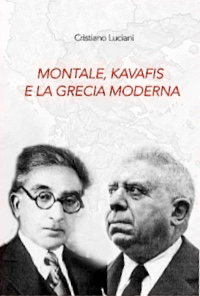

Disincanto, ironia, lingua fluida, miti rovesciati e tempo non lineare in Montale e Kavàfis nella lettura di Cristiano Luciani.
I percorsi della poesia attraversano distanze di tempo e luogo e si intrecciano creando legami non immediatamente percepibili. Nato ad Alessandria d’Egitto, Kostantinos Kavàfis, tra i principali esponenti della letteratura neogreca, muore a settant’anni nel 1933. Lo stesso anno il trentaseienne Eugenio Montale è alle prese con le riedizioni degli Ossi di Seppia (prima edizione Gobetti 1925) e la stesura delle poesie de Le Occasioni (1939). Il rapporto letterario, precedente l’interesse concreto di Montale verso Kavàfis soltanto analizzato da Cristiano Luciani (docente di Letteratura neogreca all’Università di Tor Vergata) nel saggio Montale, Kavàfis e la Grecia Moderna (2006-2016) che, soffermandosi anche sulle traduzioni in greco di Montale, contribuisce tanto a comprendere la poetica di questi, quanto ad approcciare la poesia dell’altro. Attraversiamo il libro cercando di rintracciare i fili da cui il discorso si dipana.
Prendiamo le mosse dalle figure di questi poeti oggi così celebrati e rappresentativi, eppure anche atipici e in qualche modo marginali. Montale aveva fatto studi di ragioneria, Kavàfis lavorava come agente di cambio: se il talento di ambedue appare irregolare rispetto alle convenzioni, sono parimenti critici dell’ufficialità letteraria e congetturali nelle loro poetiche. Il primo è a suo agio nell’elegia della privazione, il secondo si riconosce quale aedo della decadenza. L’«attesa del miracolo» (dichiarata nell’Intervista immaginaria, 1946) di Montale trova riscontro in Kavàfis con le «attese tradite» (espresse in Demetrio Sotere 162-150 a.C., 1919), ed è in un certo senso di attese capovolte che le loro poetiche confluiscono.
I Barbari (scritta nel 1898 e pubblicata nel 1904) è l’unica traduzione del greco realizzata da Montale nel 1957, a partire dalla versione inglese di Sir John Maurocordato. Una civiltà ormai esaurita sembra essere in attesa della propria capitolazione, e ai barbari, il cui arrivo sembra ormai prossimo. lo stesso imperatore ostenta una pergamena «dove offre titoli e onori», e consoli e pretori per sbalordirli indossano «toghe rosse e ricamate» e altri ornamenti. Capovolgendo persino i paradossi, la desiderata invasione di forze nemiche non avviene:
- È che fa buio e i Barbari non vengono,
e chi arriva di là della frontiera
dice che non ce n’è neppure l’ombra.
- E ora che faremo senza i Barbari?
(era una soluzione come un altra,
dopo tutto…)
A tale conclusione sconsolata eppure divertita sembra rispondere con toni similmente epigrammatici e disincantati, controeloquenti nonché anticlassici, la Lettera da Kifissià (su Satura, 1971), scritta dall’italiano rimestando i momenti dell’instaurazione in Grecia del regime dei Colonnelli del 1967. Emerge una dimensione di stasi, nella quale «le ombre/ che si nascondono tra le parole» sono sottratte allo scorrere del tempo pur se nutrono una memoria perenne per la quale la pietà, se inesauribile, è «usata male» e anche i vinti, quando si destano, «sono i peggiori»:
Tutto ricordo
del tuo paese, del suo mare, delle
sue capre, dei suoi uomini,
eredi inattendibili di un mondo
che s’impara sui libri ed era forse
orrendo come il nostro.
L’incontro tra la dimensione liminare del poeta ligure, appartenente ad un contesto aperto a numerose influenze quanto chiuso nella proprio tipica dimensione, e quella cosmopolita del poeta di Alessandria, città dove alle soglie dell’età cristiana prese forma l’ellenismo e nella quale in epoca a noi prossima sono nati anche gli italiani Marinetti e Ungaretti, scaturisce dal bisogno di Montale di approfondire l’eredità delle parole«sapide di sale greco» (Mediterraneo, 1924, su Ossi di Seppia) che, dalla prospettiva milanese in cui assesterà gli anni più maturi, intende verificare la poeticità di paesaggi altri rispetto a quelli delle Cinque Terre e delle colline toscane. Il paesaggio greco gli sembra emblematico di una dimensione «probabilmente misterica» e capace di «difendersi» dalla banalità, anche da quella turistica (Sulla via Sacra); all’interno di quel paesaggio, con il proprio senso ad un tempo tragico e moderno, l’altro poeta aveva espresso l’invito a non sciupare la vita «nel troppo commercio con/ la gente» al punto di farne «una stucchevole estranea» (E se non puoi la vita che desideri).
L’approccio di Montale con Kavàfis segue l’occasione di un’affinità che prende luogo nel 1955, anno in cui pubblica il primo articolo sul poeta alessandrino, per poi precisarsi nelle prose di Fuori di casa (1946-64, scritte originariamente come inviato per il Corriere della Sera),nei racconti di Farfalla di Dinard (1946-1950), negli scritti critici (raccolti su Nel nostro tempo, 1972, Auto da fè, 1976, Sulla poesia, 1976). La prima traduzione delle 154 poesie del “canone” ufficiale di Kavàfis esce curata da Filippo Maria Pontani nel 1961. L’anno successivo, Montale compie il suo viaggio in Grecia, di cui serbano particolare memoria Sulla via Sacra e Il carattere dei Greci (Fuori di casa), e scrive un secondo articolo su Kavàfis; in tale periodo, matura il passaggio tra una fase di impegno poetico (esauritasi con La bufera e altro, 1956) e quella del «retrobottega» della poesia (inauguratasi con Satura, 1971). Molti di questi scritti sono riportati nel saggio di Luciani che, per quanto avrebbe potuto godere di maggiore cura editoriale, è fruibile anche da chi non conosce i testi in esame.
Mentre si dedica al «secondo mestiere» di giornalista e si convince sempre di più dei profondi mutamenti in corso, che arrivano a comportare la scomparsa dell’antropocentrismo, il paesaggio della moderna ellade è visto da Montale come fosse «tutto un succedersi di strofe irregolari» (Sulla via Sacra), decisamente lontano da qualsiasi rivangamento classicistico e umanista, e ne evidenzia le caratteristiche di miseria ed esuberanza che risaltano al suo occhio di viaggiatore ironico e attento. Anche ciò permette di trovare in Kavàfis, lontano dalle retoriche nazionaliste di autori suoi conterranei, sostanzialmente un bizantino di discendenza fanariota, «rovesciatore di miti» (Un poeta alessandrino, 1955), «né trasandato né bohème» (Un poeta greco, 1962), una sponda particolarmente congeniale. Le dediche disseminate in questa e altre frequentazioni elleniche, tra le quali Margherita Dalmati (destinataria anche della già citata Lettera da Kifissià) preparano il terreno ad una fortuna greca che porterà a Montale una decina di traduttori (compresa la stessa Dalmati, che con Nelo Risi traduce pure Kavàfis). A questi traduttori, non tutti accorti nel renderne lessico e metro, tra i quali spicca per capacità e risultati Nikos Alifèris, il saggio di Luciani dedica approfondite attenzioni.
In ambedue i poeti è deciso l’interesse per una lingua fluida, dal quale le parole emergono come risonanze del non-detto, riscattando la contingenza del reale. E se nel caso di Montale la ricerca trova campo in un italiano asciutto eppure contaminato con preziosismi tratti dai vocabolari tecnici e dalla memoria poetica, per Kavàfis si compie in un neogreco ancora in formazione che se privo di ridondanze è pronto ad accogliere ibridazioni da dialetti e lingue storiche. L’esattezza propria al linguaggio della poesia trova corrispondenza in un mondo solido nella sua instabilità e ricco della sua confusione, e il «patire del finito» a cui Montale dedica passaggi memorabili di Mediterraneo, sembra dispiegarsi in quella lunga strada «fertile in avventure e in esperienze» propria ad ogni uomo che per Kavàfis trova proprio luogo ideale in Itaca (1911).
La storia si risolve per ambedue in senso storico. La denominazione degli eventi si dissolve in quanto si deposita sul fondo dell’esperienza. Per il greco, alessandrino per impulso e contemporaneo per destino, la storia rappresenta un metodo per dar forma all’insensato, risolvendosi in un tragico e irrisolto scontro tra uomini e fato, nel quale viene demistificata anche la democrazia, che si delinea quale «intervento chirurgico e risolutore» (In una grande colonia greca, 200 a.C., 1928), con modi molto simili alle politiche dell’austerity che massacreranno il paese in giorni vicini ai nostri. Per l’italiano, che abita in un incrocio di tutti i mondi possibili che non assomiglia per nulla al migliore di questi, resta della storia soprattutto quel senso di «patèe destinato/ agli Iddii pestilenziali» in cui si ignora il proprio destino e se «al festino sarò farcitore o farcito» (Sogno del prigioniero, su La bufera e altro): condizione che, dalle guerre mondiali da lui vissute a questa nostra perenne guerra globale, sembra permanere inalterato.
Come evidenzia Luciani, dietro tutto questo si staglia un comune senso precario e instabile della temporalità, addirittura reversibile o suscettibile di esserlo, dotata di una geometria irriducibile alla linearità. Ciò in Kavàfis assume connotati lussuriosamente pagani e anticristiani, inclini ad un’omosessualità consapevolmente sterile, che esprimono un garbato senso di decadenza; per Montale, nestoriano interessato alla continuità tra paganesimo e cristianità, apre ad una critica del presente non esente da curiosità scientifiche. In ambedue, quanto resta di questo mondo non lineare è una dimensione di attese capovolte. In questo vuoto, essere nel tempo rivela le proprie dissonanze personali, aprendo alla profonda instabilità di ogni durata.
Un tempo ciclico che con inaspettate epifanie sorprende la vicinanza tra epoche remote è quindi testimoniato da Montale in A Pio Rajina (3.12.1975) da Quaderno di quattro anni (1977):
C’è chi vive nel tempo che gli è toccato
ignorando che il tempo è reversibile
come un nastro di macchina da scrivere.
Chi scava nel passato può comprendere
che passato e futuro distano appena
di un milionesimo di attimo tra loro.
In Kavàfis, come segnala il poeta greco a lui successivo Giorgio Sefèris, la storia si configura quale specchio del transeunte. Tale precarietà di fondo permette il rovesciamento di prospettiva colto e ironico de I passi (1909), dedicata a Nerone, di cui Luciani nel saggio offre una traduzione:
E ora disanimati i i tristi Lari
sul fondo del larario s’immergono,
e l’uno urta e fa cadere l’altro,
cade un piccolo dio sopra un altro
dopo aver compreso che grido fosse,
hanno inteso ormai i passi delle Erinni.
Usciamo dal libro per intrecciare tra loro altri percorsi. Montale e Sefèris sono quasi coetanei e, pur se mancano prove di rapporti diretti, si può individuare una relazione latente, fatta di circostanze biografiche, simboli ricorrenti, comuni riflessioni sulla condizione umana. L’elogio compiuto da Sefèris nel discorso del Nobel (1963) nei confronti della poesia, utile quantomeno perché «fa riflettere cento volte prima di parlare» (atteggiamento che comunque lo costrinse a prendere posizione contro il regime dei Colonnelli), trova agganci con quanto sostenuto dall’altro premio Nobel Montale (nel 1975) in La solitudine dell’artista (1952), per il quale l’«io trascendentale» del poeta, anche laddove «illumina solo una brevissima striscia di spazio davanti a noi», è capace di rendere effettivamente comunicabile l’esperienza (per quanto il regime fascista lo dichiarò «pochissimo pericoloso»).
Invece, la clausura «inavvertita» e ripetutamente dichiarata di Kavàfis, può essere messa in rapporto con la «mineralizzazione» dell’esistenza testimoniata da Camillo Sbarbaro, poeta ligure immediato predecessore di Montale, quindi anagraficamente a più prossimo a Kavàfis. Su questo e Sbarbaro pesano in particolare modo i simbolisti francesi, che da Baudelaire a Mallarmè sono impegnati ad esplorare come sia il suono delle parole a determinare il senso di un mondo. Su tutti, sembra dominare l’immensa figura di Eliot, che più di ogni altro ha posto il sentire poetico nella capacità di correlare un mondo di oggetti destinato alla consunzione eppure presente alla nostra smarrita coscienza. Poi, non resterà che il linguaggio. E qui ci fermiamo, perché per il momento queste sono pagine ancora a venire.

•
Presentazione del libro di Cristiano Luciani “Montale, Kavàfis e la Grecia moderna” (Universitalia, Roma 2016), Sala degli Specchi del Comune di Frascati 29.09.2016.
Fotografia: Claudio Comandini, “Panni stesi sull’Egeo” - Santorini 1993.